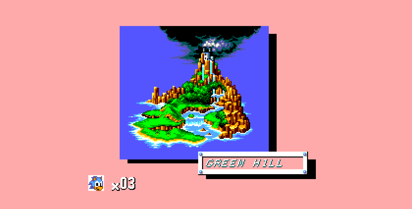
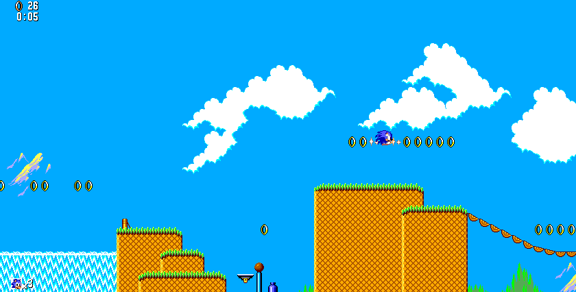
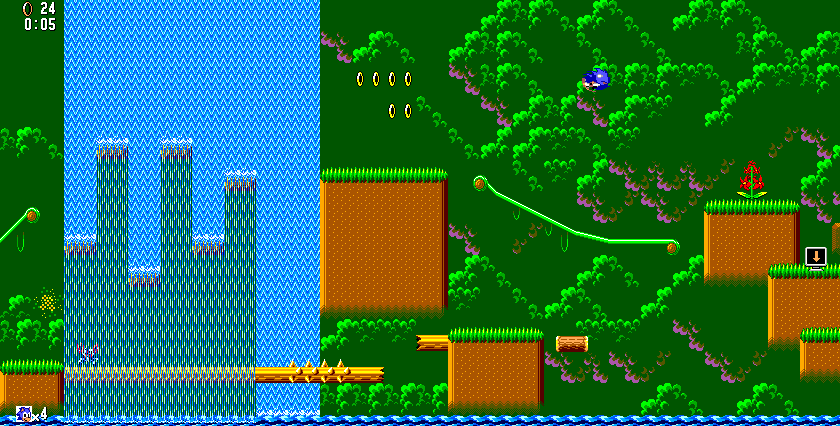
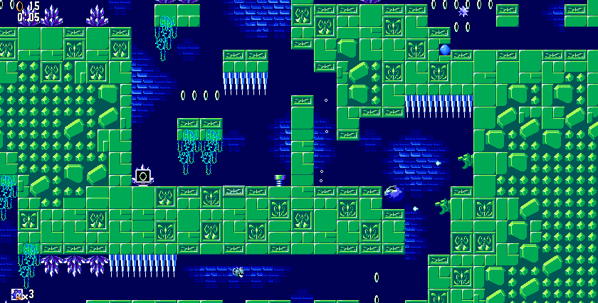
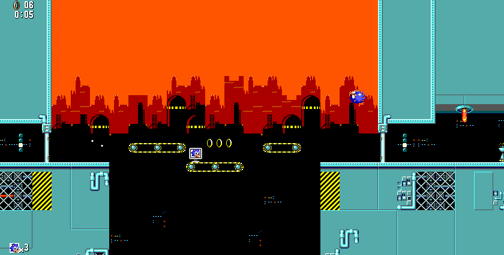
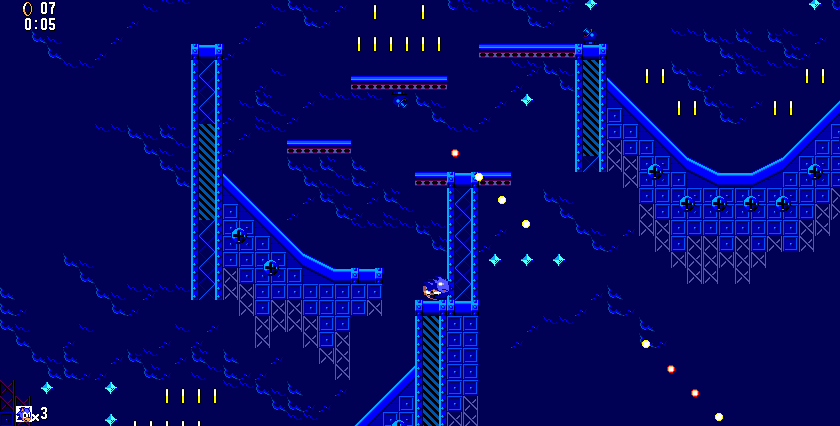
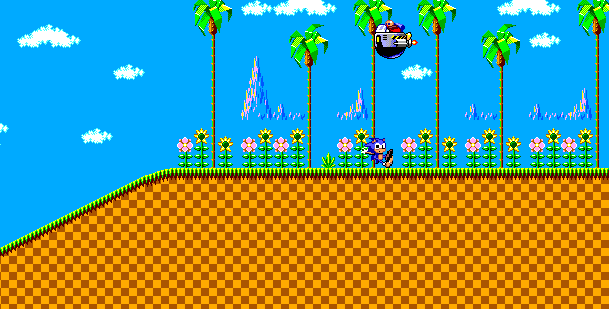
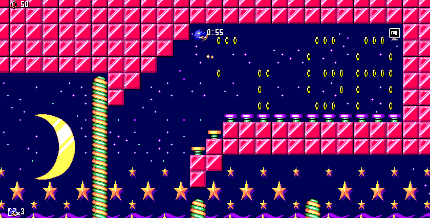
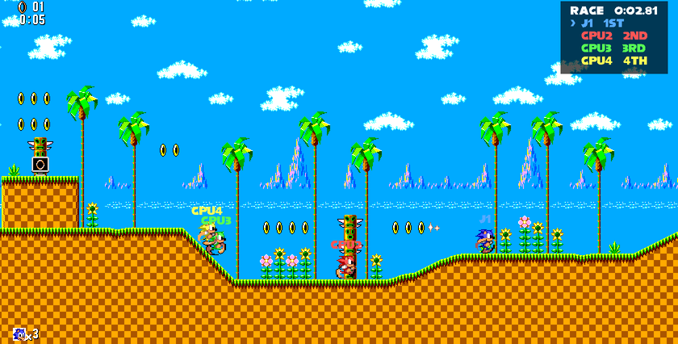
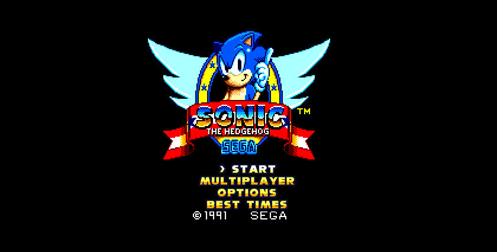

Le Sonic 8 bits, en entier
Courir, sauter, ramasser les anneaux, casser les écrans à bonus, et arriver au panneau au bout de chaque acte. Six zones de trois actes, un boss à la fin de chaque zone, les niveaux spéciaux pleins d'anneaux et de ressorts, et la fin du jeu.
Le jeu garde vos meilleurs temps et un fantôme de votre meilleure course, à battre la fois suivante. Dans les options : un filtre d'écran cathodique, la vitesse PAL ou NTSC, le français ou l'anglais, et un juke-box des musiques.

Les six zones
Chaque zone a ses décors, ses pièges et son boss. Captures du jeu tel qu'il tourne dans le navigateur.








Contre les bots
Dans MULTIPLAYER, affrontez de 1 à 4 coureurs pilotés par l'ordinateur (jusqu'à 5 pour le drapeau), dans les zones du jeu, avec quatre règles :
Course : le premier au panneau. Drapeau : le garder le plus longtemps. Anneaux : en avoir le plus. Deathmatch : rester le dernier debout.
Envie d'affronter de vrais joueurs ? C'est dans la version complète.
La version complète : sonic.mimichat.fr
Ce jeu vient de Sonic PHP, dont la version d'origine, complète, se joue sur sonic.mimichat.fr. Elle a tout ce qu'il y a ici, et en plus :
- le multijoueur en ligne jusqu'à 6 joueurs, en course, drapeau, anneaux ou deathmatch ;
- des salons publics, ou privés avec un code de 4 lettres ; les places libres sont prises par des bots ;
- la discussion dans les salons et en jeu ;
- les replays de chaque partie ;
- une version ordinateur (PHP natif) qui rejoint les mêmes salons que les navigateurs.
Commandes
Clavier
← → courir
↑ regarder en haut, ↓ se rouler en boule
Espace sauter
Entrée menus et pause
Échap retour au titre
Manette
Croix ou stick pour courir, A, B, X ou Y pour sauter, Start pour les menus et la pause, Select pour revenir au titre.
Téléphone
Une croix à gauche pour courir ; à droite JUMP pour sauter et ROLL pour la boule, START pour la pause et MENU pour le titre. Tenez le téléphone à l'horizontale.
Comment il a été fait
Sonic PHP est écrit entièrement en PHP : la physique, les objets, les ennemis, les boss, la caméra et les bots. Les niveaux, les graphismes et leurs cycles de couleurs ont été décodés depuis la cartouche d'origine, et la musique a été rendue en faisant tourner le programme son Z80 du jeu dans un émulateur.
Ici, le jeu est porté sur le moteur JumPHP : le même code tourne dans une fenêtre sur ordinateur et dans le navigateur, où PHP est compilé en WebAssembly. La logique du jeu est celle d'origine ; seuls l'affichage, le son, les commandes et les sauvegardes passent par JumPHP.
Le code : sonic-jumphp (cette version) et sonicGamePhp (la version complète).

Questions
Faut-il installer quelque chose ?
Non : le jeu tourne dans le navigateur, sur ordinateur comme sur téléphone. Le premier chargement télécharge environ 25 Mo (PHP en WebAssembly, les niveaux, les graphismes et la musique), ensuite tout est en cache.
Quelle différence avec la version complète ?
La version complète ajoute le multijoueur en ligne jusqu'à 6 joueurs, les salons, la discussion et les replays. Celle-ci est le même jeu porté sur JumPHP, pour jouer seul ou contre des bots.
Mes temps sont-ils sauvegardés ?
Oui : les meilleurs temps, les fantômes et les options restent dans votre navigateur.
Peut-on y jouer hors du navigateur ?
Oui, avec JumPHP et Docker : bin/jumphp run sonic ouvre le jeu dans une fenêtre, avec
le son. Voir le dépôt GitHub.